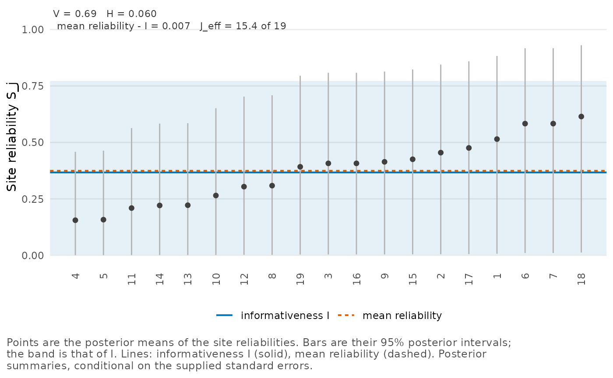

In a random-effects meta-analysis the studies play the part of the
sites. A study’s reliability is the weight that its own estimate keeps
in the empirical Bayes prediction of its true effect, and poolinfo’s
diagnostics summarize these weights over the studies. In this vignette
we fit a meta-analysis with metafor (Viechtbauer 2010) and compute the
diagnostics in three ways: at metafor’s estimate of the between-study
variance, over a confidence interval for it, and over its posterior.
Along the way we relate them to the heterogeneity statistics that
metafor prints. For the definitions of
,
,
,
and
(the informativeness, the mean reliability, the dispersion, the logit
variance and the concentration count), see
vignette("poolinfo").
metafor writes the between-study variance
,
and poolinfo writes it
(sigma_tau^2 in its printed output). We use poolinfo’s
notation from here on, so
is the between-study standard deviation. poolinfo’s printed output calls
the studies sites.
A meta-analysis of teacher expectancy effects
We use the data set dat.raudenbush1985 of the metadat
package, which metafor loads. It has 19 studies of the effect of
teachers’ expectations on their pupils’ IQ, each with a standardized
mean difference and its sampling variance (Raudenbush 1984; Raudenbush and Bryk 1985). We fit
the usual random-effects model by restricted maximum likelihood
(REML).
dat <- dat.raudenbush1985
fit <- rma(yi, vi, data = dat, method = "REML")
fit
#>
#> Random-Effects Model (k = 19; tau^2 estimator: REML)
#>
#> tau^2 (estimated amount of total heterogeneity): 0.0188 (SE = 0.0155)
#> tau (square root of estimated tau^2 value): 0.1372
#> I^2 (total heterogeneity / total variability): 41.86%
#> H^2 (total variability / sampling variability): 1.72
#>
#> Test for Heterogeneity:
#> Q(df = 18) = 35.8295, p-val = 0.0074
#>
#> Model Results:
#>
#> estimate se zval pval ci.lb ci.ub
#> 0.0837 0.0516 1.6208 0.1051 -0.0175 0.1849
#>
#> ---
#> Signif. codes: 0 '***' 0.001 '**' 0.01 '*' 0.05 '.' 0.1 ' ' 1metafor estimates
at 0.0188 and reports
and
.
As a proportion, its
is
,
where
,
0.0262 here, is the “typical” within-study variance of Higgins and Thompson (2002), which
typical_variance() also computes. The familiar
,
here 0.50, agrees with it only when
is estimated by the DerSimonian-Laird method (DerSimonian and Laird 1986), as
the note in ?metafor::print.rma explains. metafor’s
is
,
the ratio of the total variability to the sampling variability, and it
has nothing to do with poolinfo’s dispersion
.
The profile at the REML estimate
reliability_profile() takes the fit, computes the
studies’ reliabilities at metafor’s estimate of
,
and summarizes them.
profile <- reliability_profile(fit)
profile
#> Reliability profile of 19 sites at sigma_tau = 0.137 (metafor REML estimate)
#>
#> informativeness I 0.351
#> mean reliability 0.371
#> dispersion H 0.0748
#> logit variance V 0.688
#> concentration count J_eff 15.6 of 19
#>
#> Site reliabilities range from 0.12 to 0.68.At the REML estimate,
is 0.35, below metafor’s
of 0.42, although both divide
by
plus a representative sampling variance.
uses the geometric mean of the sampling variances, 0.0348, which here is
larger than the typical variance (with other variances it can be
smaller). So
is the reliability of a study whose sampling variance is that geometric
mean, and also what we get by averaging the studies’ reliabilities on
the logit scale and transforming back (Lee 2026). Across the studies, the
reliabilities range from 0.12 to 0.68. Each is the weight that a study’s
own estimate keeps in its empirical Bayes prediction:
blup(fit) returns
for study
,
with
the estimated mean effect.
A profile at one value of carries no uncertainty about that value, and with 19 studies the uncertainty is large. metafor’s standard error of , 0.0155, is 82% of the estimate itself.
Confidence intervals mapped through the diagnostics
and
increase with
,
and so does
when the sampling variances differ, as they do here. A confidence
interval for
therefore maps to an interval for each of them with the same coverage.
first rises and then falls, so its interval is the range of
over the interval for
,
which covers the true value at least as often.
map_tau2_interval() maps the Q-profile interval of Viechtbauer (2007), which
confint() also reports for this fit up to its default
tolerance, and keeps it as an attribute.
mapped <- map_tau2_interval(fit)
mapped
#> functional estimate lower upper
#> 1 I 0.35138913 0.14432956 0.85050381
#> 2 mean 0.37148772 0.17259328 0.82160015
#> 3 J_eff 15.57711811 13.65786411 18.63387314
#> 4 H 0.07482955 0.04279031 0.08159594
attr(mapped, "interval")
#> estimate lower upper
#> 0.018826348 0.005861527 0.197700666metafor’s confint() maps the same Q-profile interval
through its own
:
confint(fit)
#>
#> estimate ci.lb ci.ub
#> tau^2 0.0188 0.0059 0.1977
#> tau 0.1372 0.0765 0.4447
#> I^2(%) 41.8571 18.2934 88.3189
#> H^2 1.7199 1.2239 8.5608The Q-profile interval for runs from 0.0059 to 0.1977. Through it becomes a 95% confidence interval from 0.14 to 0.85, and through metafor’s an interval from 18% to 88%. Both intervals have the coverage of the Q-profile interval and differ only in the representative sampling variance. Like everything else in poolinfo, they are conditional on the sampling variances.
The posterior and the restricted likelihood
reliability_posterior() takes the fit too. It computes
the posterior of the diagnostics with flat priors on the mean and on
,
the package’s default, which
vignette("posterior-summaries") discusses.
post <- reliability_posterior(fit)
post
#> Reliability profile of 19 sites (posterior)
#> Model: estimate ~ N(effect, se^2), effect ~ N(mean, sigma_tau^2),
#> sites independent
#> Prior: flat on the mean and on sigma_tau
#> Summaries are conditional on the supplied standard errors.
#> Each site counts equally in the diagnostics, whatever its size.
#>
#> mean 95% interval
#> informativeness I 0.367 0.003 0.772
#> mean reliability 0.374 0.004 0.743
#> dispersion H 0.0602 0.0012 0.0816
#> concentration count J_eff 15.4 11.9 18.3 of 19
#> logit variance V 0.688 (fixed by the standard errors)
#> sigma_tau 0.151 0.0105 0.343
#> effect mean 0.0866 -0.0212 0.218
#>
#> Pr(I > 0.5) 0.318
#> I at E(sigma_tau^2) 0.467With a posterior mean of 0.37 and a 95% posterior interval from 0.003 to 0.77, the posterior of reaches values near 0, although the Q-profile interval for excludes 0. Each interval rests on a different statistic. With a flat prior on the mean, integrating the mean out of the likelihood leaves the restricted likelihood that REML maximizes (Harville 1974). Since the prior on is flat too, the posterior density of is proportional to that restricted likelihood. Its peak is at the REML estimate, , and at the density is still 0.53 of the peak. Cochran’s , on which the Q-profile interval is built, is 35.8 at , on 18 degrees of freedom ().
A confidence interval built on the restricted likelihood behaves like
the posterior. metafor’s profile likelihood interval, which
?metafor::confint.rma describes as more consistent with
REML estimation, includes 0, and we map it through the diagnostics by
giving map_tau2_interval() the sampling variances and the
interval.
pl <- confint(fit, type = "PL")$random["tau^2", ]
mapped_pl <- map_tau2_interval(se2 = dat$vi, interval = c(
estimate = fit$tau2, lower = pl[["ci.lb"]], upper = pl[["ci.ub"]]
))
mapped_pl
#> functional estimate lower upper
#> 1 I 0.35138913 0.00000 0.75161599
#> 2 mean 0.37148772 0.00000 0.72359190
#> 3 J_eff 15.57711811 11.81683 18.17332079
#> 4 H 0.07482955 0.00000 0.08159594Mapped through , the profile likelihood interval runs from 0.00 to 0.75, close to the posterior interval from 0.003 to 0.77, whereas the Q-profile interval gave 0.14 to 0.85.
A proper prior
With 19 studies we also want to know how much the flat prior on
contributes. A half-normal prior with scale 0.5 is a reasonable proper
alternative for standardized mean differences. It puts 95% of its mass
below 0.98, so it allows true effects that vary from study to study by
up to about one standard deviation of IQ and makes larger spreads
unlikely. prior_sensitivity() refits the posterior under it
and sets the two fits side by side.
prior_sensitivity(post, list(
`half-normal, scale 0.5` = sd_prior("half_normal", scale = 0.5)
))
#> Comparison of 2 analyses
#> Intervals are central posterior intervals.
#> Each analysis is conditional on its own standard errors.
#>
#> analysis J informativeness I mean reliability
#> flat 19 0.367 [0.003, 0.772] 0.374
#> half-normal, scale 0.5 19 0.355 [0.003, 0.759] 0.363
#>
#> analysis dispersion H concentration count J_eff
#> flat 0.0602 [0.0012, 0.0816] 15.4
#> half-normal, scale 0.5 0.0596 [0.0010, 0.0816] 15.3With this prior, has a posterior mean of 0.355 rather than 0.367, and its 95% posterior interval ends at 0.759 rather than 0.772. For these studies, then, our reading of the posterior is the same under either prior.
A moderator
With moderators,
is the residual heterogeneity, the variance of the true effects around
the meta-regression, and each study is pulled toward its own predicted
value. Raudenbush (1984) related the effects to the
weeks of contact between teachers and pupils before the expectations
were induced. As in the example on the help page of
dat.raudenbush1985, we cap the weeks at 3, so that the
moderator distinguishes 0, 1, 2, and 3 or more weeks.
dat$weeks.c <- pmin(dat$weeks, 3)
fit_weeks <- rma(yi, vi, mods = ~ weeks.c, data = dat, method = "REML")
fit_weeks
#>
#> Mixed-Effects Model (k = 19; tau^2 estimator: REML)
#>
#> tau^2 (estimated amount of residual heterogeneity): 0.0000 (SE = 0.0072)
#> tau (square root of estimated tau^2 value): 0.0008
#> I^2 (residual heterogeneity / unaccounted variability): 0.00%
#> H^2 (unaccounted variability / sampling variability): 1.00
#> R^2 (amount of heterogeneity accounted for): 100.00%
#>
#> Test for Residual Heterogeneity:
#> QE(df = 17) = 16.5708, p-val = 0.4838
#>
#> Test of Moderators (coefficient 2):
#> QM(df = 1) = 19.2583, p-val < .0001
#>
#> Model Results:
#>
#> estimate se zval pval ci.lb ci.ub
#> intrcpt 0.4072 0.0870 4.6782 <.0001 0.2366 0.5778 ***
#> weeks.c -0.1572 0.0358 -4.3884 <.0001 -0.2275 -0.0870 ***
#>
#> ---
#> Signif. codes: 0 '***' 0.001 '**' 0.01 '*' 0.05 '.' 0.1 ' ' 1The REML estimate of the residual falls from 0.0188 to 0.0000, metafor’s is 100%, and the test for residual heterogeneity gives . At that estimate the largest study reliability is 0.00007, so the profile at the REML estimate would pull every study all the way to its predicted value. Under the flat priors, the posterior instead weights each value of by its restricted likelihood, as we saw above, and we fit it for the meta-regression next.
post_weeks <- reliability_posterior(fit_weeks)
post_weeks
#> Reliability profile of 19 sites (posterior)
#> Model: estimate ~ N(effect, se^2), effect ~ N(x'beta, sigma_tau^2),
#> sites independent
#> Prior: flat on the coefficients of the mean model and on sigma_tau
#> Summaries are conditional on the supplied standard errors.
#> Each site counts equally in the diagnostics, whatever its size.
#>
#> mean 95% interval
#> informativeness I 0.103 0.000 0.457
#> mean reliability 0.117 0.000 0.464
#> dispersion H 0.0263 0.0000 0.0800
#> concentration count J_eff 13.0 11.8 16.4 of 19
#> logit variance V 0.688 (fixed by the standard errors)
#> sigma_tau 0.0553 0.00202 0.171
#> coefficient intrcpt 0.415 0.232 0.601
#> coefficient weeks.c -0.160 -0.238 -0.0845
#>
#> Pr(I > 0.5) 0.017
#> I at E(sigma_tau^2) 0.129With the moderator, the posterior mean of falls from 0.37 to 0.10, with a 95% posterior interval from 0.00 to 0.46, and the posterior mean of from 0.151 to 0.055. Once the moderator accounts for most of the variation of the true effects, little of what remains can be told apart from sampling error. The model then pulls each study most of the way toward its predicted value. Now the flat prior is on the two coefficients of the meta-regression, and the printed output lists their posterior means and intervals.
The studies’ reliabilities
Here the sampling variances range from 0.0088 to 0.1391, a 16-fold range, and their logit variance is . We plot the reliabilities of the model without the moderator, sorted, with their 95% posterior intervals.
plot_profile(post)
Study 4, by Pellegrini & Hicks, has the largest sampling variance and a posterior mean reliability of 0.16, and study 18, by Fleming & Anttonen, has the smallest variance and 0.61. Every study’s posterior interval starts below 0.02 and is at least 0.45 long, because the posterior of is wide, and the band of runs from 0.003 to 0.77.
Your own meta-analysis
With your own meta-analysis, you pass the rma() fit
to
-
reliability_profile()for the profile at its estimate, -
map_tau2_interval()for confidence intervals, or -
reliability_posterior()for the posterior, where its moderators become the mean model.
poolinfo reads fits of rma.uni(), the function behind
rma(), which have one between-study variance and
independent estimates. If your studies give several estimates each, you
would model them with rma.mv(), whose fits poolinfo does
not read. One option is then to combine the estimates of each study into
one with metafor’s aggregate() method for
escalc() data, under an assumed correlation within studies,
and to fit rma() to the result.